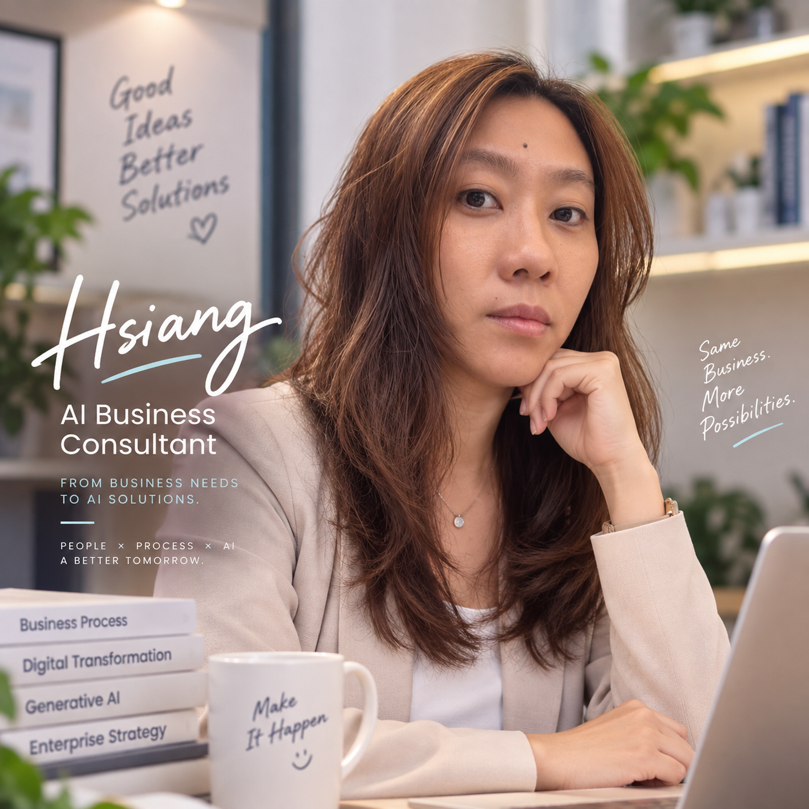

ERP & Enterprise Systems
跨功能與跨區域的 Oracle ERP 導入與整合。
HSIANG TING LEE · 李湘婷
把多年企業系統與流程改善經驗，延伸到真正解決問題的 AI 應用。

01 / ABOUT
如何讓科技，
真正改善企業的工作方式？
我在 Diodes Incorporated 累積近 17 年經驗，從 Senior Application Manager 發展至 Business Process Re-engineering Manager，長期串連企業需求、系統設計與跨部門協作。
我的工作橫跨製造、半導體、電信與軟體產業，涵蓋 ERP、供應鏈、採購、倉儲管理、軟體開發、全球系統整合與流程再造。
現在，我把這些經驗延伸到 AI 應用。我關注的是：什麼商業問題值得解決？AI 如何與既有流程、資料及系統一起運作？
了解我的 AI 發展方向02 / EXPERIENCE
從理解需求，到設計、建置、導入與持續改善。
跨功能與跨區域的 Oracle ERP 導入與整合。
串連需求規劃、訂單承諾、全球採購與倉儲作業。
流程再造、跨國專案協作與企業併購後的系統整合。
半導體
Senior Application Manager & Business Process Re-engineering Manager
2008 – 2025
全球系統與流程再造
主導全球 ERP、企業系統整合與跨國流程改善，帶領約 12 人團隊，串連營運需求與系統落地。
SOFTWARE
Engineer
Dec 2007 – Sep 2008
ERP 導入評估 × HRMS × 財務流程優化
電信
Engineer
Jul 2007 – Dec 2007
建立 O2C 流程基礎
維護 Oracle ERP OM / AR 與 Ares HRMS，累積電信產業的企業系統支援經驗。
製造／通訊
Senior Specialist
Mar 2003 – Jul 2007
從系統實作走向海外帶隊
企業系統導入與維護，涵蓋 HRMS、Oracle Fixed Assets（FA）、OM、AR 與 IBM QuickPlace。
AI 應該如何融入既有工作流程？
AI 能加速開發，需求、架構與控制機制仍是系統的基礎。
從值得解決的問題出發，再思考驗證、安全與治理。
05 / KNOWLEDGE
多年 Oracle ERP 與企業系統的實務筆記，從導入經驗、技術問題到流程觀察。
過往文章將逐步整理並移入本站，目前可在 Pixnet 閱讀原始內容。
06 / WHAT’S NEXT
企業系統與流程改善的累積，正在開展新的 AI 應用可能。我持續投入生成式 AI、RAG、AI Agent、自動化與 AI 輔助開發。
07 / ONGOING
持續思考、實作、學習，也重新整理累積的知識。
AI × Business Process
閱讀 LinkedIn 分享AI Projects & Experiments
查看我的專案AI Application Planning
了解學習方向Oracle & Enterprise Knowledge
閱讀知識筆記